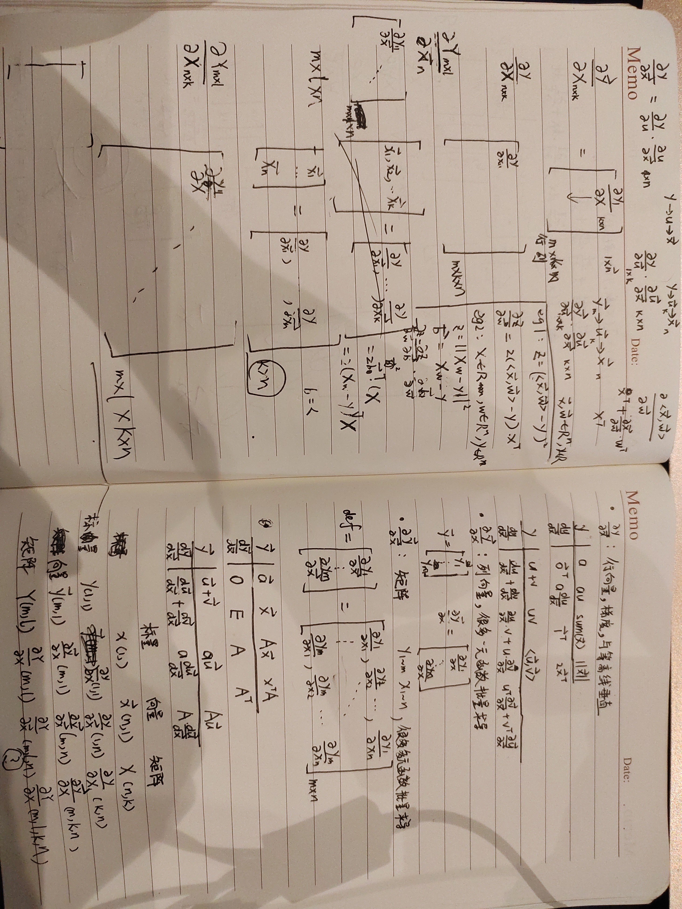
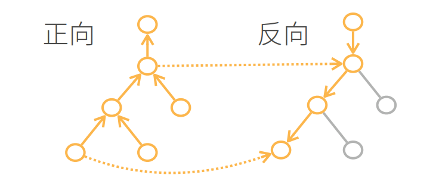
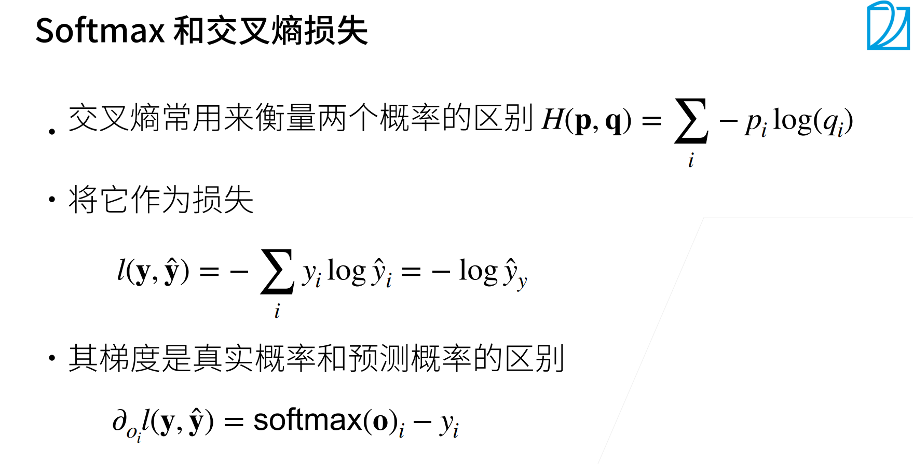

# 学习心得
从 0 开始的学习，虽然对任何事情都充满了好奇心，但由于有些知识并没有足够的经验来立刻理解，理解它们需要进一步搜寻前置的知识 (eg: 以前没遇到过的 python 语法，库，术语)。
保留了一些目前理解不了的细节 (eg: 在代码中如何用 matplotlib 画出图，感觉跟主线的关系不大就先跳过了) 留在以后回看。
在这一周中主要完成了以下内容
- 环境安装
- 数学基础 (主要是矩阵求导以及自动求导)
- 从自然语言、数学语言、计算机语言的不同角度学习了 2 个基本的单层神经网络
- 线性回归
- softmax 回归
练习过的代码在
DeepLearning/week1_DLpre/src at main · lagrange10/DeepLearning (github.com)
# 深度学习基础
# 矩阵求导
做了一些推导和实例计算..

# 自动求导
主要是反向累积的思想
步骤：
- 构造计算图
- 前向执行计算图
- 反向求梯度（输入：前向执行和反向的过程中的数据 输出：需要的梯度）（空间换时间）
- 去除枝

# pandas 数据处理
# 缺失数据处理
通常采用插值、删除。
对数据进行插值时，不能对字符串这类数据插值为平均值。
inputs = inputs.fillna(inputs.mean()) |
因此可以将 NAN 视为一个类别，从而转化为一个张量格式。
# 独热编码 (one-hot encode)
通常，将「代表类型的数据」存储为 0，1，2 可以减少开销，但机器学习中存在大量加权平均的操作，这样会在加权平均后暗含 “2” 比 “0”，“1” 要 “好” 的意思，相当于强加了一个偏序关系。
因此，对于不含偏序关系的类别采用独热编码，将类型视为一个特征，可以解决上面的问题。
在上面的例子中，把 Pave，NAN 类型转换为独热编码，解决了插值问题。
NumRooms Alley | |
0 3.0 Pave | |
1 2.0 NaN | |
2 4.0 NaN | |
3 3.0 NaN | |
inputs = pd.get_dummies(inputs,dummy_na=True) | |
NumRooms Alley_Pave Alley_nan | |
0 3.0 1 0 | |
1 2.0 0 1 | |
2 4.0 0 1 | |
3 3.0 0 1 |
# 线性回归
假设特征和标签的关系是线性的加上一个服从正态分布的噪声，一个最简单的模型。
通过均方差的损失函数衡量模型的好坏，更新模型参数 W 和 B。
# Softmax 回归
背景是一个 q 类分类的问题。模型通过 d 个输入特征，经过一层的线性网络得到未经规范化的输出 o-hat，将 o-hat 通过 softmax 算子对输出进行概率归一化得到预测输出 y-hat。
目标：最小化 y-hat 与真实输出 y 的差异（以交叉熵为损失函数来衡量），以此更新模型参数 W 和 B。让得到的模型有更高的预测准确率。
# 损失函数

# python 语法
# assert
assert expression |
等价于
if not expression: | |
raise AssertionError |
eg:
assert train_loss < 0.5, train_loss # 训练损失一定不为 0，在 0 和 0.5 之间 | |
assert train_acc <= 1 and train_acc > 0.7, train_acc # 训练集准确率一定不为 0，在 0.7 和 1 之间 | |
assert test_acc <= 1 and test_acc > 0.7, test_acc # 测试集准确率一定不为 0，在 0.7 和 1 之间 |
# 迭代器、生成器、yield
可迭代对象：可以 for...in... 遍历的
eg: torch.utils.data.DataLoader 用数据集构造的可迭代对象，每次取样一批数据
def load_array(data_arrays, batch_size, is_train=True): | |
"""构造一个PyTorch数据迭代器""" | |
dataset = data.TensorDataset(*data_arrays) #* 是解包 | |
return data.DataLoader(dataset, batch_size, shuffle=is_train) | |
batch_size = 10 | |
data_iter = load_array((features, labels), batch_size) | |
for X,y in data_iter: | |
... # 可以访问遍历 |
一些尝试 ./test/test.py